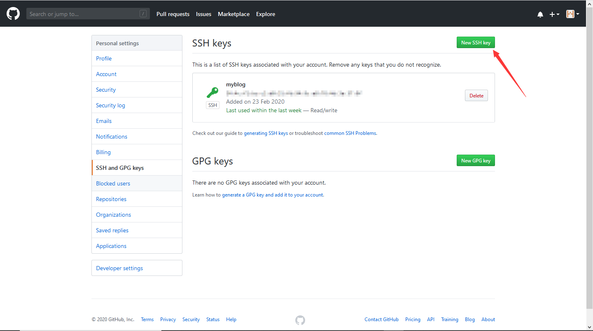
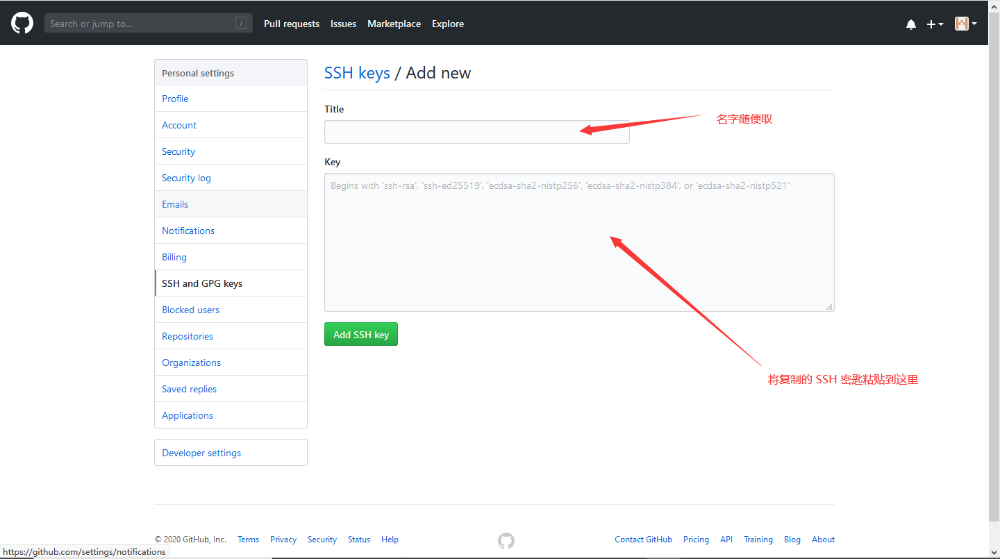
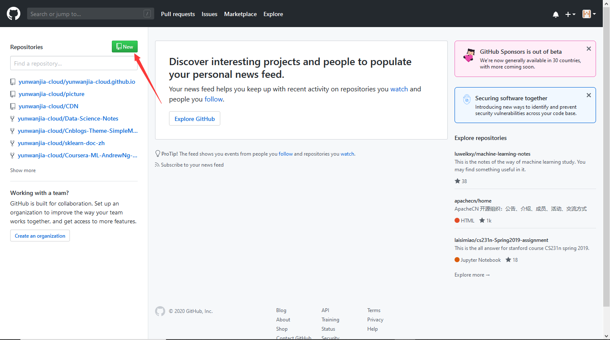
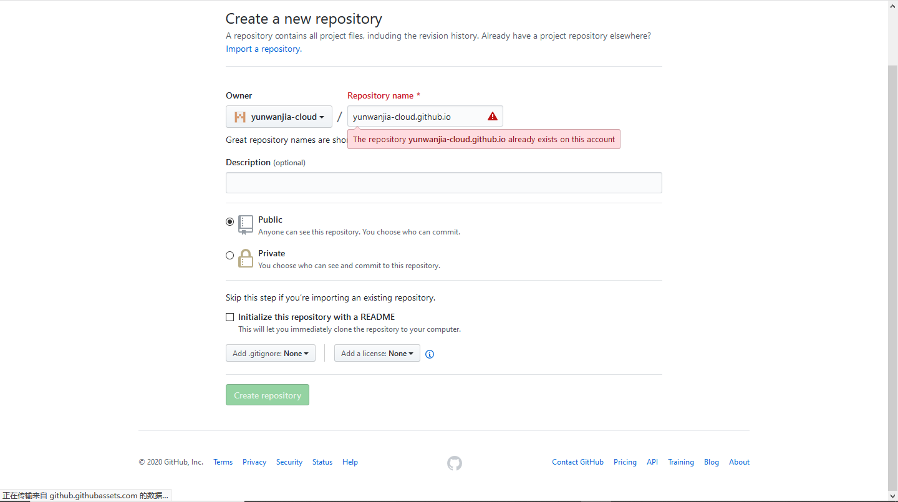
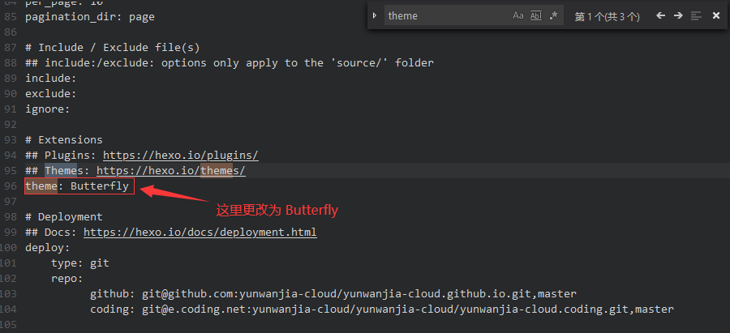
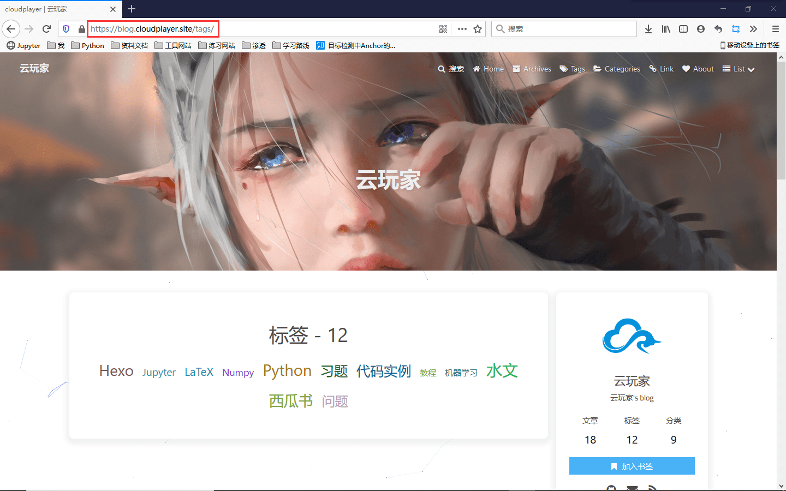
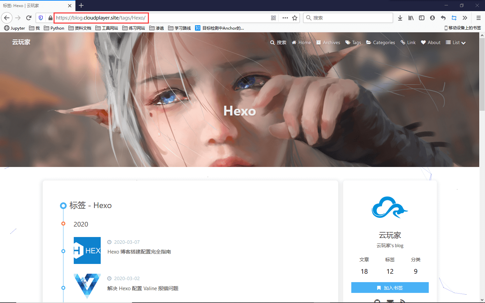
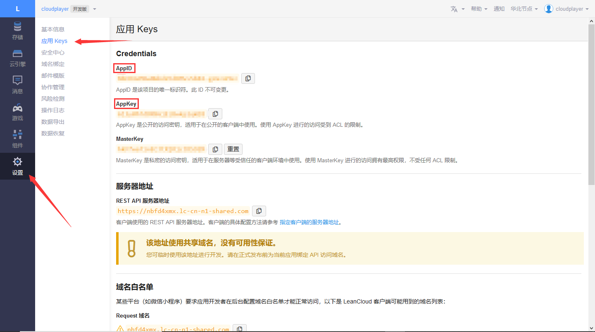
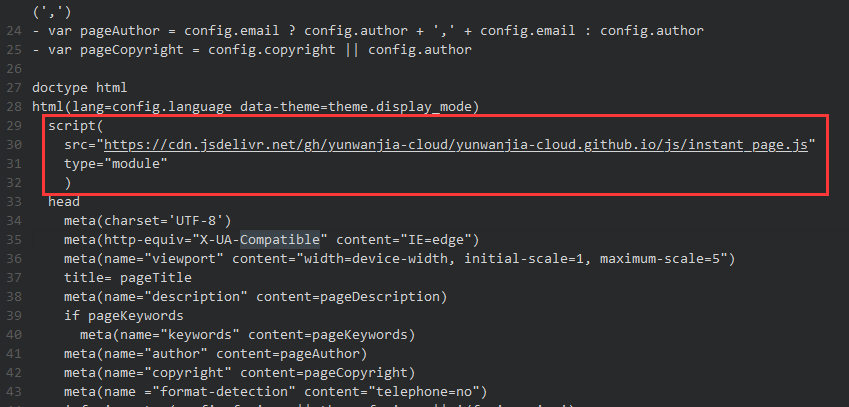

史上最全的 Hexo 博客搭建配置完全指南
本篇博客基于 Centos 7.x root 用户.
最近利用 Hexo + Github Pages 搭建了一个博客, 总体来说比较满意, 中间也踩了不少坑. 于是将我的配置过程全部记录下来, 就有了这篇博文.
关于 Hexo 搭建配置的博文网上还是挺多的, 但是零零散散, 这篇博文就当成是一个大合集吧. 废话不多说, 下面开始我们的正篇.
搭建
准备环境
安装 Git
1 | sudo yum install git-core |
安装 Node.js
1 | wget -qO- https://raw.github.com/creationix/nvm/master/install.sh | sh |
安装 Hexo
1 | mkdir hexo |
测试服务
1 | hexo server |
这时你可以打开浏览器访问 http://localhost:4000 就可以看到你刚刚搭建成功的博客页面了. 当然如果你使用的是云服务器, 那么同样可以打开 (云服务器的 ip):4000 来访问博客.
将博客部署到 Github
把博客部署到 Github 是大多数站长的选择.
注册 Github 账号
首先你要有一个 Github 账号 (已有账号可以跳过), 点此前往注册. 输入你的邮箱和你起的用户名, 密码就可以注册了. 这里我们假设你的用户名为 cnyist 邮箱为 371622558@qq.com (下面所有出现用户名和邮箱的内容换成你自己的就好了).
设置 user.name 和 user.email
这里要给 git 设置变量.
1 | git config --global user.name "cnyist" |
配置 SSH 密匙
1 | ssh-keygen -t rsa -C user.email |
然后直接输入回车回车.
这时进入到 /root/.ssh/ 目录下查看 id_rsa.pub 文件, 你可以使用如下命令
1 | vi /root/.ssh/id_rsa.pub |
这时就用 vim 打开了该文件, 复制文件里的所有内容 (所有内容, 一个字符都不要漏) . 然后到 Github 添加 ssh 密匙.
点击 New SSH key 按钮进行添加


点击 Add SSH key确认添加.
创建仓库
在登陆状态下打开 Github 主页, 点击 New 创建新仓库.

这里要注意, 这个仓库的命名是有一定格式的, 格式是: 用户名.github.io,
比如我的就是 blog (还记得我之前说的吗, 出现用户名和邮箱通通换成你自己的就好了).

点击 Create repository 创建该仓库. 由于我已经创建了这个仓库, 所以有报错.
配置 _config.yml
进入到博客根目录 (也就是一个名字叫 hexo 的目录, 一般在你的主目录下),
打开一个名字叫 _config.yml 的文件, 找到 deploy 这个部分, 修改成如下内容:
1 | deploy: |
保存一下. (将所有用户名和邮箱都改成自己的, 这已经是第三次提醒了哦~)
部署
清空静态页面
1 | hexo cl |
生成静态页面
1 | hexo g |
先运行下面这条命令否则直接部署会报错
1 | npm install hexo-deployer-git --save |
然后将 public 文件内容部署到 Github 仓库
1 | hexo d |
hexo cl&&hexo g&&hexo d 称为部署三件套.
此时你的个人博客就部署成功啦! 你可以通过访问 https://blog 来浏览你的博客页面 (还记得前面提示了三次啥吗~) .
这已经算是一个完整的 Hexo 博客了, 之后会有进一步的美化配置教程.
Hexo 发布文章简单介绍
在 Hexo 博客目录内 (包括其子目录) 执行
1 | hexo new "文章名" |
就会在 hexo/source/_posts 下创建一个 文章名.md 文件, 里面可以写下你的 markdown 文章, 然后通过执行部署三件套, 就能部署到你的个人博客里.
Front-matter
在文章正文前, 一般都有由两行 --- 包起来的内容, 称为 Front-matter .在 Hexo 官方文档里, 是这么说的
Front-matter 是文件最上方以
---分隔的区域，用于指定个别文件的变量.
比如
1 | --- |
干什么的应该从名字就能看出来. 这里不过多介绍如何写文章, 官方文档已经写得很详细了.
文章资源文件夹
文章资源文件夹一般是用于存放文章的图片, 方便管理. 进入站点 _config.yml 将 post_asset_folder 选项设置为 true
1 | post_asset_folder: true |
打开该选项后, 如果你使用 hexo new "文章名" 来创建文章, 会在同一目录生成同名文件夹. 如果在里面放了图片 abc.png , 那么你就可以使用  这样的 markdown 语法来引用该图片 (在 markdown 编辑器中可能无法正确显示, 但是部署上去是完全正常的) . 这样就能实现使用相对路径引用图片.
_config.yml 配置介绍
_config.yml 这个文件我们前面已经更改过它一次了, 就是在配置部署的时候, 还记得吗? 这是整个 Hexo 博客的配置文件, 现在我们列出主要需要更改的地方, 按照关键字去查找更改就好了.
- 所有配置的配置名和配置值都要隔一个空格, 比如说 title 这个配置, 必须要写成
title: 云玩家而不可以写成title:云玩家. 前后是一个空格的区别!!! 这是 yaml (即以.yml为后缀的文件) 的语法, 要严格遵守.
site
1 | # Site |
暂时就这一项需要配置.
美化
更换域名
我们常常看到别人的博客域名并不是 xxxx.github.io 形式的, 而是其他的域名. 这是因为别人绑定了自己的域名. 下面就来教你如何绑定自己的域名.
购买域名
首先, 你要拥有一个域名, 域名可以在很多地方买到, 比如阿里云, 腾讯云等等. 不同的域名价格也不同, 但是基本上都不是很贵. 购买域名过程中的实名等等步骤这里就不再详细讲解.
域名解析
购买了域名后, 可以添加解析到你的 Github Pages. 下面我们以腾讯云为例. 首先在你的域名管理处找到你要解析的域名, 点击 解析 按钮, 进入解析界面. 然后点添加记录, 就可以添加解析记录了.
这条解析记录我们需要填的有 6 个值, 分别是 主机记录, 记录类型, 线路类型, 记录值, TTL. 下面我们来一一说明.
主机记录: 主机记录其实就是域名前缀, 比如说 www.xxxx.com, 域名其实就是 xxxx.com, 而主机记录是 www. 一般博客的主机记录可以设置为 blog, 比如我的博客就是 yunist.cn. blog 是我的域名主机记录, 我的域名是 yunist.cn. 当然有些前缀比较特殊, 比如说 *, * 是指泛解析, 就是说可以解析所有前缀. 还有就是 @, 这个前缀是说解析主域名, 也就是不带任何前缀.
记录类型: 这里不详细说明所有的记录类型, 只说明我们要用到的 CHAME 解析, 即指向另一个域名 (所以你这里应该知道要填啥了吧. 对了! 就是 CHAME).
线路类型: 我们这里填默认就好 (其他选项到后面双部署的时候会用到).
TTL: 这个值是你的解析记录在 DNS 中的缓存时间, 你可以简单理解为, TTL 值越大, 解析会越快, 但是一旦更改, 更改生效的时间就会更久. 我是设置为默认的 600秒, 即 10 分钟.
所有值填完之后就可以点击 保存 添加解析记录了.
Github Pages 添加解析
创建 CHAME 文件
进入 hexo 主目录并输入以下命令
1 | touch source/CNAME |
进入该文件并添加你刚刚解析的域名, 记得要加上你的前缀, 比如你解析的是 blog 主机记录, 你就要写上 blog.xxxx.com (这里域名为 xxxx.com). 比如我的就写 yunist.cn.
最后执行部署三件套 hexo cl&&hexo g&&hexo d 后就可以用你自己的域名访问你的博客啦!
修改博客默认主题
大家可以看到我的博客界面很好看, 而且还有很多不同的博客界面, 这就涉及到主题的配置了. 这里配置主题以 Butterfly 这个主题为例. 现在我的博客已开源, 你也可以直接使用我的源码达到我博客的效果, 详情请看 Hexo modify theme butterfly.
下载主题并使用
在 Hexo 根目录下执行命令
1 | git clone -b master https://github.com/jerryc127/hexo-theme-Butterfly.git themes/Butterfly |
如果没有 cheerio 则需要安装
1 | npm install cheerio --save |
下载 Butterfly 主题. 然后就会看到根目录下 theme 这个文件夹里多了一个 Butterfly 文件夹. 进入博客根目录的 _config.yml 文件 (不是 theme 里的哦), 找到 theme 这一项, 把值改为 Butterfly.

然后部署三件套, 之后再打开你的博客, 大概率会发现无法正常打开, 那么这时候需要安装 pug 以及 stylus 的渲染器
1 | npm install hexo-renderer-pug hexo-renderer-stylus --save |
重新部署就会发现你的博客大变样了.
配置主题
此时就要配置我们的主题了, 配置项大多都在 hexo/themes/Butterfly/_config.yml 这个文件里. 我们打开它. 同样的这里列出建议改动的地方.
再次提醒
- 所有配置的配置名和配置值都要隔一个空格, 比如说 title 这个配置, 必须要写成
title: 云玩家而不可以写成title:云玩家. 前后是一个空格的区别!!! 这是 yaml (即以.yml为后缀的文件) 的语法, 要严格遵守.
banner: 查找 banner 关键字, 可以修改默认 banner 为你自己的图片. 什么是banner 呢, 其实就是博客里页面中的各种图片 (不是文章里的图片).
比如这三项
1 | # the banner image of archive page |
分别代表归档, 标签, 分类页的 banner (该页面上面的大图). 当然还有 index 的banner (主页). 这里要注意, 所谓标签, 分类页的 banner 代表的是具体标签, 分类里的图, 而不是标签, 分类. 分类的图 (好吧你们肯定听不懂我在说啥). 下面看例子
这是标签

这是具体标签

明白区别了吗, 标签包含了具体标签, 具体标签被标签包含!!
所以上面更改的是具体标签的图, 当然两个都可以改成同一个, 我就是这么做的. 标签页如何更改要具体看下面 文章 cover 的内容.
favicon: 即网站图标
social: 可以更改为你的社交账号如 Github, QQ邮箱等
avatar: 即头像
canvas_ribbon: 即各种彩带特效, 可以自己一个个开启试试效果
menu 介绍
通过修改 menu , 可以实现增加, 减少页面. 比如有些博客有 关于我(about) 页面, 有些博客有 影视, 音乐 等界面. 这些都是通过生成页面并修改 menu 实现的.
修改 menu
进入博客主题的 _config.yml 配置文件, 搜索 menu 关键字, 就可以快速找到 menu 的配置项. 可能长这个样子
1 | menu: |
下面我们来详细介绍.
添加一个页面的格式是
1 | 页面名: /路径/ || fa fa-图标名 |
页面名就是页面名 (废话) , 路径是相对于你的博客路径, 比如说你的博客主页是 yunist.cn , 那么相对路径 /tags/ 就是 yunist.cn/tags/而图标名可能要说明一下, hexo博客菜单所使用的图标都是用的 Font Awesome , 它并不是一张图片，你可以理解他就是一种字体. 它为您提供可缩放矢量图标, 它可以被定制大小、颜色、阴影以及任何可以用CSS的样式. 想要了解更多可以看中文官网, 想要什么图标也可以上去查它的名字.
这里还有一个比较特殊的一项
1 | List||fa fa-list: |
这项其实是生成了一个子菜单, 格式就是
1 | 子菜单名||fa 图标名: |
分类, 标签页等的生成
修改了 menu 后, 页面其实并没有生成, 博客一开始是没有这些页面的, 点击会 404. 如何生成这些页面呢?
执行以下代码
1 | hexo new page tags |
就可以生成相应页面, 更进一步的, 你可以根据你配置的 menu 生成任意的自定义页面, 即使用
1 | hexo new page xxxx |
来生成 xxxx 这个页面. 如 about 关于我页面, 只需要执行
1 | hexo new page about |
就好了.
增加功能
添加 mathjax 引擎使博客支持 LaTeX
LaTeX 数学公式对于我这种写文章经常用数学公式的非常重要, 当然如果你不需要完全可以跳过这段.
有很多主题其实已经配置好了 mathjax, 这里来说明如何配置.
进入主题的 _config.yml 文件, 找到 mathjax 这一项配置, 改成如下
1 | mathjax: |
per_page 这一项最好为 false 这样在不需要数学公式的时候可以节省加载时间. 如果你想在某篇文章使用 mathjax 引擎的话, 就在这个文章的 Front-matter (还记得这是什么吗) 里加入 mathjax: true 就好了.
当然有些主题本身没有集成 mathjax, 怎么办呢. 这里给出解决方案.
使用 Kramed 代替 Marked
Hexo 默认的渲染引擎是 marked，但是 marked 不支持 mathjax. kramed 是在 marked 的基础上进行修改而来的.
执行以下命令
1 | npm uninstall hexo-renderer-marked --save |
安装 hexo-renderer-mathjax 包
1 | npm install hexo-renderer-mathjax --save |
重新部署, 成功显示数学公式. 样例看这.
- mathjax 默认不渲染由两个美元符号包括在内的公式 (即所谓行内公式), 只渲染由两对美元包括在内的公式 (即所谓行间公式), 而各大博客网站 (如简书, 博客园, CSDN) 所用数学引擎都是 katex (是渲染的), 因此迁移会有一点问题. 而且还有一个问题就是 LaTeX 中的下划线
_在 markdown 中的含义是斜体, 会发生歧义, 所以我采用了一种笨拙的方法来解决这个问题, 我写了一个 Python 脚本当作 “转换器”, 主要原理就是把所有单个的美元都变成一对美元, 这样啥问题都解决了.
开启使用
一般来说在主题的配置文件中都会有 mathjax 的选项, 设置值为 true . 由于渲染 mathjax 会比较慢, 所以默认应该是并非每个页面都渲染, 如果要使用需要在要渲染的文章的 Front-matter 里加入
1 | mathjax: true |
这样就能开启使用了.
Valine 评论功能
为什么是 Valine 呢? 因为我喜欢. (不用登陆啥的太方便了)
同样的, 很多 Hexo 主题集成了 Valine 评论系统, 我们先在主题的 _config.yml 文件中找到 Valine 这个配置
1 | # valine comment system. https://valine.js.org |
enable 改成 true appId 与 appKey 这两项的值需要通过 LeanCloud 获得.
首先当然是先注册一个 LeanCloud 账号, 然后进入到控制台, 创建一个应用, 自己随便填应用名称, 选择开发版, 然后进入这个应用, 进入 设置->应用 keys 就可以看到你的 appId 和 appKey了.

将这两个值填入, 就可以使用 Valine 了, 但是如果使用评论的时候报错, 那么可以看我的这篇文章, 解决了 Valine 报错的问题.
cnzz统计
进入友盟官网注册一个账号, 然后进入工作台, 点击 添加Web, 按照要求填写, 然后会要求在你的网站添加统计代码. 我们一般将这段统计代码添加到网页的页脚.
博客页脚布局一般在主题下的 layout/includes/footer.ejs 下, 在最后添加你选择的代码. 当然, 页脚布局有可能是 layout/includes/footer.pug (比如说 Butterfly 主题就是这样) , 那么又稍有不同.
比如其中一个代码是
1 | <script type="text/javascript" src="https://s4.cnzz.com/z_stat.php?id=1278667709&web_id=1278667709"></script> |
那么要改成
1 | script( |
再比如
1 | <script type="text/javascript">document.write(unescape("%3Cspan id='cnzz_stat_icon_1278667709'%3E%3C/span%3E%3Cscript src='https://s4.cnzz.com/z_stat.php%3Fid%3D1278667709' type='text/javascript'%3E%3C/script%3E"));</script> |
要改成
1 | script(type="text/javascript") document.write(unescape("%3Cspan id='cnzz_stat_icon_1278667709'%3E%3C/span%3E%3Cscript src='https://s4.cnzz.com/z_stat.php%3Fid%3D1278667709' type='text/javascript'%3E%3C/script%3E")); |
(注意 document.write 前面有一个空格)
那么到底要怎么改呢, 聪明的同学可能已经找出了规律, 即 script() 括号里的内容其实是每一个代码开头的 <script> 标签里的内容, 然后 script() 后的内容 (注意要隔一个空格) 就是被两对尖括号包起来的内容, 比如
1 | document.write(unescape("%3Cspan id='cnzz_stat_icon_1278667709'%3E%3C/span%3E%3Cscript src='https://s4.cnzz.com/z_stat.php%3Fid%3D1278667709' type='text/javascript'%3E%3C/script%3E")); |
当然如果里面没有内容就空着.
根据这个规律, 我们可以得出其他代码的写法
再再比如
1 | <script type="text/javascript">document.write(unescape("%3Cspan id='cnzz_stat_icon_1278667709'%3E%3C/span%3E%3Cscript src='https://s4.cnzz.com/z_stat.php%3Fid%3D1278667709%26show%3Dpic' type='text/javascript'%3E%3C/script%3E"));</script> |
应该改成
1 | script(type="text/javascript") document.write(unescape("%3Cspan id='cnzz_stat_icon_1278667709'%3E%3C/span%3E%3Cscript src='https://s4.cnzz.com/z_stat.php%3Fid%3D1278667709%26show%3Dpic' type='text/javascript'%3E%3C/script%3E")); |
以上其实是 pug 语言的语法, pug 是一个 HTML 模板工具, 想更多的了解 pug, 建议查看官方文档.
让博客支持脑图 (思维导图)
1 | npm install hexo-simple-mindmap |
然后只要在 markdown 文件中按照下面的语法就能写出脑图啦~
1 | {% pullquote mindmap mindmap-md %} |
- demo
- 这是一个分支
- 这是另一个分支
- 分支的分支哦
- 分支的另一个分支哦
- 没有分支的分支
- 没有分支的另一个分支
加速博客
Github Pages 的服务器在国外, 所以速度其实并不咋地, 所以这里给出优化方案.
CloudFlare 加速
CloudFlare 是一家国外的 CDN 加速服务商. 事实上, 我并不推荐 CloudFlare 对你的博客进行 CDN 加速, 因为 CloudFlare 在国内并没有多少节点, 还很不稳定, 而且挂了 CF 后速度似乎还更慢了些, 所以这里不详细讲解, 想用的自己去了解吧.
Jsdelivr 加速
绝对要推荐这个, 加速利器, 你不需要注册, 甚至连登陆它的网站都不用, 就可以免费使用 Jsdelivr 加速, 简直业界良心啊有木有. Jsdelivr 可以加速 Github 上的静态文件, 很多主题都有配置, 我们这里介绍如何通过 Jsdelivr 引用 Github 资源.
首先, 如果你看不懂以下教程, 没关系, 我还准备了另外一个简单的方式使用 Jsdelivr , 详情请看这篇文章.
你可以认为 Jsdelivr 里放了你传上 Github 的文件 (这个 ‘放’ 的过程是自动的, 只要 Github 上有资源, 就会被 ‘放’ 到 Jsdelivr 上), 由于 GFW 的关系, 国内访问 Github 上的资源是很慢的, 那么我们可以通过访问 Jsdelivr 来间接访问 Github 上的资源.
Github 上的某个资源是有其位置的, 如何访问一个 Github 资源? 你只需要知道:
- 用户名
- 仓库名
- 资源在仓库中的位置
同样, Jsdelivr 中的某个资源也是有其位置, 如何访问一个经 Jsdelivr 加速的 Github 资源? 你同样只需要知道:
- 用户名
- 仓库名
- 资源在仓库中的位置
访问互联网上的资源需要通过 url(统一资源定位器) .
那么:
某个 Github 资源通过 Github 引用的 url 格式是:
https://raw.githubusercontent.com/用户名/仓库名/master/资源在仓库中的位置
而通过 Jsdelivr 引用的 url 格式就是:
资源在仓库中的位置
Jsdelivr 加速的原理就是, 把静态资源的 url 全部替换为 Jsdelivr 的 url (比如图片等资源).
这里再提醒一遍, 任何 Github 资源都可以在 Jsdelivr 上引用, 不受仓库限制, 很多教程提到新建一个所谓 “cdn” 仓库, 但是根本没必要, Github 仓库上限 100G , 建博客绰绰有余.
图床
相信很多人都有使用图床的经历, 在文章中直接引用外链也能显著的加速, 但是上面已经介绍了 Jsdelivr 加速了, 所有图片都可以通过 Jsdelivr 加速, 已经没有使用图床的必要了. 但是还是有人想用图床, 那么这里介绍一种发生, 搭建自己的图床. 利用的原理还是 Jsdelivr 加速, 即将 Github 当成图床, 然后通过 Jsdelivr 引用. 这里利用了一个方便的工具 Picgo, 它可以方便的上传图片到 Github (但是经常出错, 非常玄学, 时灵时不灵, 经过本人测试, 只有 2.0.4 这个版本勉强能用, 但还是经常出错, 反正就是玄学).
网页预加载脚本 instant.page
这个脚本可以实现页面的预加载, 将用户想要访问的页面缓存下来, 需要时直接从缓存读取.
- Butterfly 自带该脚本, 因此如果使用 Butterfly 主题可以不用配置.
特性
- 在用户点击网站链接之前, 他们将鼠标悬停在该链接上. 当用户徘徊 65 毫秒时, 他们将点击该链接有两个机会, 因此 instant.page 此时开始预加载, 平均超过 300 毫秒, 以便页面预加载.
- instant.page 是渐进式增强 - 对不支持它的浏览器没有影响.
- instant.page 对站内访问速度的提升的确很给力。然而它只会预加载自己的站内链接，而不会预加载其他外链。
使用方法
将这段代码放到主题目录下的 layout/includes/layout.ejs 文件中的 </body> 标签前就可以了.
1 | <script src="https://cdn.jsdelivr.net/npm/instant.page@latest/instantpage.min.js"></script> |
当然, 同样也有 layout/includes/layout.pug 的情况 (同样比如 Butterfly), 那么可以将以下代码放到 head 前
1 | script(src="https://cdn.jsdelivr.net/npm/instant.page@latest/instantpage.min.js") |

Butterfly 主题升级
注意! 所有重大改动必须备份! 别怪我没提醒你!
注意! 所有重大改动必须备份! 别怪我没提醒你!
注意! 所有重大改动必须备份! 别怪我没提醒你!
先要将本地的所有修改先暂时存储起来:
1 | git stash |
然后再
1 | git pull |
最后还原暂时存储的内容
1 | git stash pop |
这时, 就需要你去修改一些冲突的地方了, 冲突的地方挺好找的, 观察一下就发现规律了. 可以执行 hexo g 然后查看报错的地方, 一般来说报错的地方就是和更新内容有冲突的地方, 需要自己一个个去改. 如果你在 _data 文件下有 butterfly.yml 文件, 一定要将新增配置复制过去, 否则可能会出现一些问题 (比如说顶栏消失) .
Butterfly 主题魔改
本博客已开源, 请看 Hexo modify theme butterfly.
主题魔改具体看这里.
暂时就这么多, 以后可能还会补充.